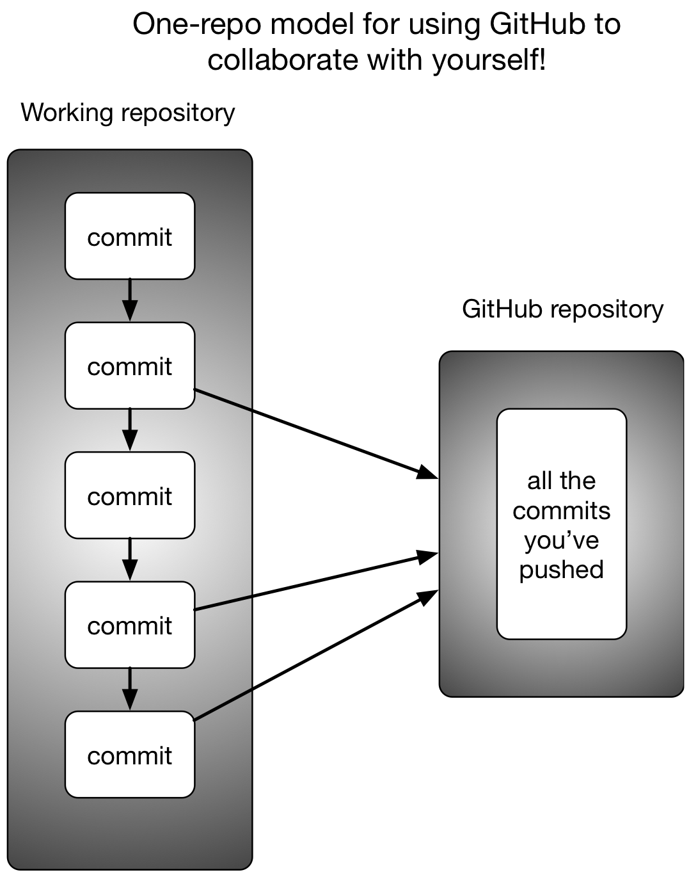

8 Keeping track of your files with version control
This two hour workshop will show attendees how to use the git version control system to track changes to your files on the remote system, as well as backup your project files to github and transfer them to your laptop or desktop. We will demonstrate file sharing via github, and discuss ways to collaborate with a team.
This lesson was adopted from a lesson co-authored by Shannon Joslin for GGG 298 at UC Davis.
8.1 Learning objectives
By the end of this lesson, students will:
- setup git and GitHub repositories
- learn how to add and track single and multiple files
- revert changes to a file
- learn to resolve merge conflicts
8.2 What is git ?
git is a version control system that lets you track changes to text files. It can also be used for collaborating with others. It’s like Word change tracking, on steroids.
Git takes a while to learn, like anything else. This lesson will teach you most of what you need to do to collaborate with yourself. Collaborating with others is a lot harder and will maybe be the subject of a different tutorial :)
8.3 Git and GitHub - creating and using a repository
git works in terms of repositories and changesets. Repositories (or “repos”) are directories (including all subdirectories) that contain files; changesets are a set of changes to one or more files.
We’re going to introduce you to git through GitHub, a website that is used to store, share, and collaborate on git repositories. You don’t need to use GitHub, or one of its competitors (bitbucket, GitLab, etc.) to carry out your research, but doing so provides a convenient way to: * back up your repo * look at your changesets * share your software with others (including both future you and your lab/advisor)
8.3.1 Create an account
Please create a free account at github.com. You’ll need to choose a username (this is public, and kind of like a social media handle, so choose wisely :) and a password (something you can remember and type!)
By default the free accounts allow unlimited private repositories with up to three collaborators, and unlimited public repositories; you can apply for an academic account if you want more collaborators on private repositories.
8.3.2 Create a git repository on GitHub
- click on the plus in the upper right of the screen at github.com
- select New repository
- name it
2021-remotecompute-workshop8. (You can name it whatever you want, but this should make it clear to you and others that this is a time-dated repo; also, all of the examples below use this name :) - also select ‘Initialize this repository with a README’
- click Create repository.
After a few seconds, you should be redirected to a web page with a URL like https://github.com/USERNAME/2021-remotecompute-workshop8. This is your GitHub URL for this repository; note that it’s public (unless you selected private) which means that anyone can get a read-only copy of this repo.
8.3.3 Log in!
Now, log in to farm, or start up a binder and go to the terminal.
8.3.4 Optional: set up a password helper
You’ll have to type in your password each time you want to make changes, unless you do this:
git config --global credential.helper 'cache --timeout=7200'By default git will cache your password for 15 minutes. Here, the timeout parameter increases this to two hours.
8.3.5 Optional: configure git credentials on Farm
To ensure the username and email are consistent between the farm account and your newly created GitHub account, you can update the git configuration on the farm account by replacing the user.name and user.email with your GitHub account credentials
git config --global user.name "Your Name"
git config --global user.email you@example.comThis may not be necessary for your current accounts as they are temporary but will become useful to configure when working within your own Farm accounts.
8.3.6 Clone the repository
Go to the GitHub repository you created, select the URL and copy it into your paste buffer.
Run:
cd ~/
git clone https://github.com/USERNAME/2021-remotecompute-workshop8This will create a directory 2021-remotecompute-workshop8 under your home directory.
Change into it:
cd 2021-remotecompute-workshop8and look around with ls -a. You’ll notice two files: a .git subdirectory (this is a directory that git uses to keep information about this repo!) and a README.md file that contains the name of the repository. This file is the same README that is displayed at the above GitHub URL when you go to it.
If you wanted to track files in the 2021-remote-computing-binder folder that we have been working with, run
git initwhich converts any existing directory into a git repository.
8.3.7 Edit a file
Let’s edit the README.md file; on binder, you can use RStudio, or use
nano on farm:
nano README.mdand add a new line like “This is a example respoitory for 2021 Remote Computing workshop at UC Davis” to the file, then save it and exit nano using CTRL-X.
Now type:
git statusYou should see the following message:
On branch main Your branch is up to date with ‘origin/main’.
Changes not staged for commit: (use “git add
…” to update what will be committed) (use “git checkout – …” to discard changes in working directory) modified: README.mdno changes added to commit (use “git add” and/or “git commit -a”)
This is telling you a few things.
- the most important is that README.md has been modified!
- it also tells you that, as far as git knows, you have the latest version of what’s on github (‘origin’ branch ‘main’). We’ll revisit this later.
- it also gives you some instructions. You can trash the modifications to README.md by typing
git checkout -- README.mdand it will revert the file to the last change that git tracked. Alternatively, you can dogit addto tell git that you plan tocommitthese changes.
We’ll commit these changes in a second; let’s look at them first. Run:
git diffYou should see something like:
diff --git a/README.md b/README.md
index 8d2d4d8..0a92250 100644
--- a/README.md
+++ b/README.md
@@ -1 +1,4 @@
-# 2021-remotecompute-test
\ No newline at end of file
+# 2021-remotecompute-test
+
+This is a example respoitory for 2021 Remote Computing workshop at UC Davis
+This is telling you that you changed one file (README.md), and that you changed three lines: you added a newline at the end of the first line, a blank line, and, for the third line, whatever text you added.
8.3.8 Commit a file
At this point you still haven’t told git that you want to keep this change. Let’s do that. We can add the changes the file using
git add README.mdWe can check the status:
git statusTo commit these changes:
git commit -m "added info to README"This tells git that the changes to the README.md file are worth keeping as a changeset, and that you want to tag this changeset with the commit message “added info to README”. You should see something like:
[main 9bf6695] added info to README 1 file changed, 3 insertions(+), 1 deletion(-)
here, 9bf6695 is the changeset id. We’ll talk about this later.
Note that if you didn’t config git with user.name and user.email, the first commit message will also contain information on the account information:
Committer: datalab account 03 <datalab-03@farm.cse.ucdavis.edu>Now type:
git diffagain - it should show you nothing at all.
What if you run
git statusagain?
You should see:
On branch main Your branch is ahead of ‘origin/main’ by 1 commit. (use “git push” to publish your local commits)
nothing to commit, working tree clean
What this tells you is that you are now out of sync with your origin/main git repo, which is the GitHub URL above from which you cloned this repo.
Let’s fix that:
git pushIt should now ask you for a username and a password. If you enter your GitHub username and your password, it will result in an error with this message
remote: Support for password authentication was removed on August 13, 2021. Please use a personal access token instead.
fatal: unable to access 'https://github.com/s-canchi/2021-remotecompute-workshop8.git/': The requested URL returned error: 4038.3.8.1 GitHub PAT setup
Github has disabled passwords in favor of personal access tokens (PAT). Follow these steps on Github to generate a PAT:
- go back to GitHub interface
- click on your icon on the top right corner
- from the drop down menu select Settings
- click on Developer settings from the left panel to be directed to a new page
- click on Personal access tokens
- click on Generate new token, give it a name in the Note to help you remember what the token if for/when it was created
- scroll down and click Generate token
Remember to save the token somewhere safe (e.g., password manager). After you leave this page, the token will no longer be viewable.
We also have a detailed tutorial on GitHub PAT authentication with pointers for resetting previous passwords.
Going back to commiting the changes, now let’s try again
git pushEnter your username and PAT token for password. You should see something similar
To https://github.com/s-canchi/2021-remotecompute-workshop8.git ad7e8de..9bf6695 main -> main
which tells you that it pushed your changes through changeset 9bf6695 to your GitHub URL.
Now, if you go to the GitHub URL, you should see your changes in the README.md file.
8.3.9 Viewing repository history on GitHub
Toggle to your GitHub repository.
Try clicking on the “1 commit” message. You’ll see two commit messages, one “initial commit” (from when you created the repository) and one with your commit message above. They’ll be in reverse order of time (most recent first).
If you click on your commit message that you entered at the command line, you will see a nice colored ‘diff’ that shows you what changed.
If you go over to the ‘…’ menu on the far right, you can view the file as of this commit. (Right now, it will look like the latest version of this file, since this is the most recent commit.)
8.3.10 The single-repo-to-GitHub model
What we’re doing is the simplest way to use git and GitHub to manage your own repository. There are more complicated options but this is a nice blend of practicality and features (backups, change tracking, sharing options).

8.4 Let’s do it all again!
Let’s try that again…
8.4.1 Challenge: On your own, commit and push changes!
Go to your command line on farm.
Edit the file with nano README.md, and add a new line.
Verify with git status and git diff that the change is to the right file.
Add those changes
git add README.mdCommit it with
git commit -m "<commit message>"Verify it’s committed with git status and git diff.
Push your committed file with:
git pushVerify that the changes show up on github by refreshing your webpage.
Look at the change history, view the diffs.
Voila!
8.5 Working with multiple files
So far we’ve only worked with one file, README.md.
You can easily work with multiple files, though! Git changesets track simultaneous changes to many files, for example in a situation where you change both a Snakefile and an R script.
8.5.1 Create some files
Let’s make a Snakefile that produces an output file.
Run nano Snakefile and paste in the following content:
rule hello:
output: 'hello.txt'
shell:
"echo hello, world > hello.txt"use ctrl-x y to save it.
and now run it:
snakemake -j 1This will create the file hello.txt with the words hello, world in it.
What should we add to git? In general, add scripts and metadata to git, but not generated files that can be produced by the scripts. So in this case, we want to add the Snakefile, but not the output file.
If you run
git statusyou’ll see there are now three new files, Snakefile, .snakemake, and hello.txt. The last two are generated by snakemake, so let’s ignore them for now and just add Snakefile into git’s tender embrace:
git add SnakefileNow,
git statusand you should see
Changes to be committed: (use “git reset HEAD
…” to unstage) new file: Snakefile
and now you can commit and push:
git commit -am "added Snakefile"
git pushYou should now see that the git repo contains two files!
In brief,
* git commit -a automatically commits changes to every file that git cares about, but you have to tell git to care about the files.
* git can be told to care about new files using git add
* then you still need to commit them.
8.5.2 Add more stuff to the Snakefile
Use nano Snakefile to add the following lines at the top of the Snakefile (you can just paste them in).
rule all:
input: "hello.txt", "howdy.txt"
rule howdy:
output: "howdy.txt"
shell:
"echo yeah texas > howdy.txt"test it:
snakemake -j 1and now commit and push:
git commit -am "update Snakefile with howdy rule"
git push8.5.3 Revel in your ability to see the changes you’ve made over time
Go to the GitHub Web interface, and check out the history!
This is really useful when you combine it with good commit messages.
QUESTION: why didn’t we need to do a git add?
8.6 Undoing mistakes or finding older versions
8.6.1 Unwinding mistakes
Let’s make a mistake. Add some random characters to the top of the Snakefile with nano Snakefile and then save it with CTRL-Xy.
Now commit and push.
git commit -am "added important stuff to Snakefile"
git pushTry running snakemake…
…uh oh! You should get something like a NameError.
WE BROKE IT!!! WHAT DO WE DO!?
Never fear! We can unwind it!
First, you should generally test at least the syntax of your files before you commit. snakemake -j 1 -n would have told you that this was a problematic change. But we all make mistakes. So! Let’s unwind (or “reset”) the changes!
First, undo the commit:
git reset HEAD^which uncommits the commit.
Verify that this was the bad change:
git difflooks like the problem, yah?
Now undo it:
git checkout -- Snakefilethis says “check out the last committed change”, which, after the reset, is the last one BEFORE you made the mistake.
Try the snakefile out:
snakemake -j 1 -n…ok, should be no syntax error. Are we done?
NO. Unfortunately, we pushed this to GitHub! And we need to do some extra foo to fix that.
git push -f origin mainThis will force the update of your GitHub to your current changeset.
git reset is a nice way to undo a recent commit. But it’s not awesome in some circumstances, because it rolls back the entire repository (since changesets apply to multiple files). Are there alternatives? Yes!
8.6.2 git revert as an alternative
If you catch a bad commit immediately, you can also use git revert.
EXERCISE:
Give it try -
- add a bad commit to Snakefile
- commit it
- run
git revert HEAD
what does this do?
8.6.3 ‘git show’ as a way to retrieve older versions
Suppose you want to retrieve an older version of a particular file, but don’t want to roll the rest of the repo back.
First, identify the version string (commit ID) for the version of the file you want. It’ll be a long hex-digit number (0-9a-f) that looks something like 9e8008de3599f4. You can do this by looking at diffs, the change history on github, OR by running:
git logOnce you identify (…or think you’ve identified) the right version string, run git show VERSION:filename. For example,
git show VERSION:Snakefile(replace VERSION with something that’s in your own repo!) will show you that version of the Snakefile.
To copy over the current Snakefile with that version, you can run:
git show VERSION:Snakefile > SnakefileGenerally it’s a good idea to document what you’ve done by including the OLD git commit in the NEW git commit message, e.g.
git commit -am "reverted snakefile to version VERSION"8.7 More git
8.7.1 Using ‘.gitignore’ to ignore files
If you’ve done all the above, git status will show several files that you don’t want git to care about:
git statusOn branch main Your branch is up to date with ‘origin/main’.
Untracked files: (use “git add
…” to include in what will be committed) .snakemake/ hello.txt howdy.txt
Over time, these files will start to clutter up your git status output, which I use to track files that git should care about.
We can ignore these files by creating a new file that lists files to be ignored - it’s called ‘.gitignore’.
Let’s create one without using an editor:
echo .snakemake > .gitignore
echo hello.txt >> .gitignore
echo howdy.txt >> .gitignoreAnd now run
git statusagain. Looks good, right?
Oops. We want git to track .gitignore, so that we can tell git to ignore the other stuff. Sigh.
git add .gitignore
git commit -am "add gitignore"
git pushand now:
git statusshould say there’s nothing different.
Remember, you can always add stuff to .gitignore as time goes on. It’s good practice to keep git status clean to show only the stuff that you’re interested in tracking.
8.7.2 Editing on GitHub directly
You can edit on GitHub directly! This is a great way to fix little typos and use a friendly editor, but it’s a bit clunky for day to day work - you’ll see why at the end of this section :)
To edit a file on GitHub via the Web:
Go to your README.md on GitHub.
Click the little edit button.
Add some text.
Commit changes.
Yay, it’s all in the history! But it’s not yet on farm!
Now let’s pull this to farm…
Go back to your farm account. Run
git statusIt says “up to date!” THIS IS A LIE. Run:
git fetch
git statusand now you’ll see: >On branch main >Your branch is behind ‘origin/main’ by 1 commit, and >can be fast-forwarded. > (use “git pull” to update your local branch)
nothing to commit, working tree clean
Here, git fetch is updating its local information by going out and looking at GitHub.
To pull new stuff from GitHub into your repo, do:
git pullet voila!
Hopefully this should be easy to remember: push sends stuff from your repo to GitHub, pull retrieves stuff from GitHub to your repo. Plus, git status tells you what to do :).
8.7.3 Zenodo for publishing your git repo
GitHub is not suitable for publishing scripts for Supplementary Material in papers, because you can rewrite history. Is there a solution? Yes!
You can set up something to connect GitHub and Zenodo so that every time you do a “release” will freeze your repo at that version and give it a DOI. This is super useful for publishing!
To do this:
- go to zenodo.org in a new browser tab
- log in with GitHub
- go to upper right menu, select ‘GitHub’
- flip the switch next to your 2021-ggg298-week7 repository
Now, go back to your github.com tab.
Go to ‘releases’.
Create a new release. Let’s make it ‘v0.1’, “class test of zenodo”, and select “this is a pre-release”. Then “Publish release.”
Count to 10, slowly.
Now go back to zenodo. You should see that a DOI has been assigned! This is a frozen version of your repository at that point in time.
8.8 Git philosophy
- track files that you edit by hand.
- track small files (like metadata files such as spreadsheets; under ~10 MB) that should remain unchanged and that are convenient to have around.
- big data files should be kept in some other place, read-only.
- do git commit & git push frequently (at end of every session, at least) - remember, you can always unwind, but you can’t go back to a specific changeset you never committed!
- commit messages are helpful, diffs are golden.
8.9 Resources
- Check out Daniel Standage’s blog post on using github to collaborate with yourself for inspiration!
- Handy git cheatsheet from GitHub
- Mark Lodato’s visual reference on git
- Roger Dudler’s simple guide to git
- Git-it which provides step by step tutorial with challenge exercises